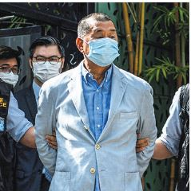

Arrests Target
Press Freedom
In Hong Kong
Police Raid Newsroom,
Citing Security Law
By AUSTIN RAMZY
and TIFFANY MAY
HONG KONG — In a high-pro-file attack on free speech and dis-sent in Hong Kong, the police on Monday arrested Jimmy Lai, a prominent pro-democracy media tycoon, and raided the offices of his newspaper, demonstrating China’s resolve to silence the op-position and bring the city to heel.
The arrest was part of a striking crackdown against critics and de-moray advocates by Beijing and the allied government in Hong Kong, in the six weeks since China adopted a sweeping new national security law. And it validated fears that the authorities would make aggressive use of the law to smother the territories freewheel-in press and political culture.
“It just gives the lie to any as-surances that the national securi-ty law would just target a few peo-ple involved in rioting,” said KeithRichburg, director of the Univer-sity of Hong Kong’s journalismschool. “It’s put a chilling effectover everything here.”
Mr. Lai and his media company,long a thorn in the side of the Chi-nese Communist Party, supportedthe antigovernment, pro-democ-racy protests that gripped the citylast year. On Monday, police offi-cers led him out of his mansion inhandcuffs and, hours later, morethan 200 officers filed into thenewsroom of his newspaper, Ap-ple Daily, and rifled throughdesks.
Some Apple Daily reporterslivestreamed video of the raid,documenting a story unfolding intheir own offices, while otherslooked on in stunned silence.When one asked Mr. Lai about thearrest and the raid, he repliedgruffly, “How should I think aboutit, dude?”
The police also arrested Mr.Lai’s two sons, who are not in-volved in his media business, andfour executives from his company,Next Digital, including its chiefexecutive, Cheung Kim-hung.
Since the security law took ef-fect, the Hong Kong authoritieshave arrested people for T-shirtsand tweets that were seen as ad-vocating independence fromChina, have asserted a right toprosecute critics abroad, havebarred 12 pro-democracy candi-dates from legislative electionsand have postponed those elec-tions by a year.
Those moves, like the arrest of Mr. Lai, signaled that China means to deal with Hong Kong as
Continued on Page A12

The police arrested Jimmy Lai.
GOVERNORS ARGUE
ORDER BY TRUMP
IMPERILS BUDGETS
FIGHT OVER JOBLESS AID
After Bipartisan Doubts,
White House Weighs
Loosening Rules
This article is by Luke Broadwa-ter, Emily Cochrane, Sarah Mer-voshand Alan Rappeport.
WASHINGTON — Governors across the United States struggled on Monday with how to makegood on President Trump’s order that their economically battered states deliver billions more in un-employment benefits to jobless residents.
Democrats were harshly critical of Mr. Trump’s order, which he signed on Saturday night after talks with Congress on a broad new pandemic aid package col-lapsed. But even Republican gov-errors said the order could put a serious strain on their budgets and worried it would take weeks for tens of millions of unemployed Americans to begin seeing the benefit.
Congress initially provided a$600-a-week supplement to un-employment benefits when the co-rotavirus pandemic shut down much of the United States in March. But that benefit lapsed on July 31, after talks between the White House and Congress broke down. Republicans had pushed fora $400 supplemental benefit, Democrats said it was not enough, and so on Saturday Mr. Trump or-dared the $400 benefit — but said it was contingent on states to come up with $100 of that on their own.
Gov. Andrew M. Cuomo of New York told reporters on Monday that Mr. Trump’s directive would cost his state about $4 billion by the end of the year, making it Littlemore than a fantasy. He said that no New Yorker would see enhanced unemployment benefits because of the president.
“This only makes a bad situation worse,” Mr. Cuomo said. “When you are in a hole, stop dig-ging. This executive order only digs the hole deeper.”
His comments were echoed bovo. Andy Besmear of Kentucky, a Democrat like Mr. Cuomo, who said Mr. Trump’s order would cost his state $1.5 billion through the end of the year.
“It’s not workable in its current form,” Mr. Besmear said. “It’s something virtually no state can afford.
Republicans largely praised the president for trying to act where Congress’s dysfunction had failed, but they said they would need to pull funds from other pressing budgetary needs.
Gov. Asa Hutchinson of Arkansas, a Republican, said it was possible to comply with Mr. Trump’s executive order, but he would have to reallocate money from an-an-another portion of the budget.
Continued on Page A6
NEW DILEMMA The president’s
payroll tax order has employers’
heads spinning. PAGE A